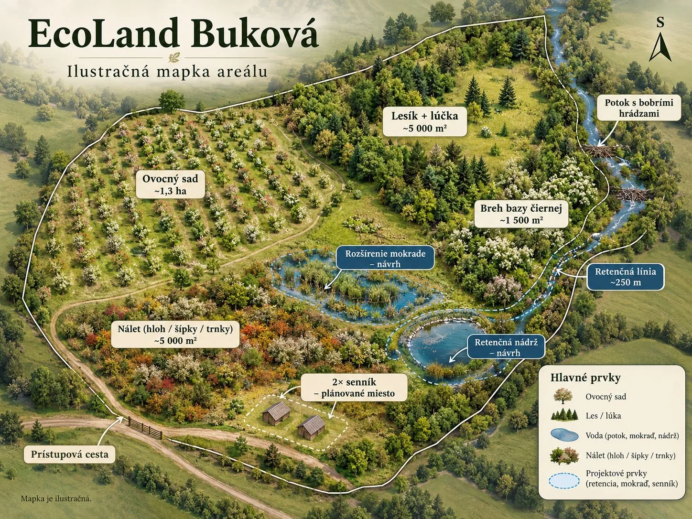

♣
Krajina a biodiverzita
Ochrana prirodzených biotopov, podpora opeľovačov, starostlivosť o dreviny a miestnu vodu.
EcoLand prepája živú krajinu, obnovu ovocného sadu, starostlivosť o vodu a nápady pre udržateľné podnikanie a vzdelávanie.

Priestor pri Bukovej vytvára spojenie ovocného sadu, remízok, lúky, mokrade a potoka s bobrím biotopom. Jeho potenciál spočíva v citlivom rozvoji, nie v masovej výstavbe.
Ochrana prirodzených biotopov, podpora opeľovačov, starostlivosť o dreviny a miestnu vodu.
Prírodné workshopy, školské programy, odborné exkurzie a komorné podujatia.
Na predaj celé územie s rozpracovanou víziou a možnosťou ďalšieho rozvoja po schválení zámerov.
Rozmanitosť územia umožňuje spojiť pestovanie, osvetu, prácu s vodou a malé zážitkové formáty.

27 000 m² · 150 000 € · viacero možností využitia